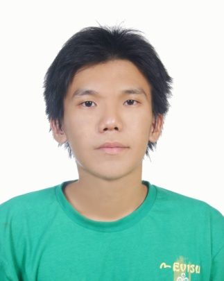

資深 FAE / 硬體研發 / 電源與 EMC 設計
具 15+ 年硬體研發與 FAE 經驗，早期深耕伺服器電源架構設計（VRD、DC-DC）與 EMC 對策，後轉任 FAE 專注客戶技術支援、NPI 導入與海外量產管理。熟悉從電路設計、PCB Layout、EMC 驗證到客戶端失效分析與良率改善的完整產品生命週期，能快速定位軟硬體整合問題並推動內外部團隊解決。具備跨文化工作經驗（廈門和深圳共駐點八年，主要負責大陸客戶，也曾接觸東南亞客戶），英文商務溝通流利，可配合長期外派大陸／泰國／越南／深圳／華南。
| FAE 領域 | Field Application Support, NPI導入, 失效分析, 量產支援 |
| 電源設計 | Server VRD, DC-DC, USB PD, Flyback/LLC |
| PCB 設計 | OrCAD Capture, Allegro PCB Editor, Layout, EMC對策 |
| 模擬驗證 | Sigrity PowerDC/PowerSI, PI/SI 模擬 |
| EMC/安規 | EMI對策, ESD測試, EN55022, EN61000-4-2 |
| 測試設備 | 示波器、資料收集器、EMC測試儀器 |
| 分析方法 | 8D Report, RCA, FMEA, SPC, Minitab, JMP |
| 程式語言 | Python（測試自動化）、GPIB 控制 |
| 產業標準 | ISO 9001, IATF 16949, ISO 14001 |
| 中文 | 母語 |
| 英文 | 商務流利（TOEIC 600）— 技術簡報與會議 |
| 客戶支援 | Field Application Support, On-site Support, Technical Training |
| 產品導入 | NPI, Production Ramp, Application Validation |
| 品質分析 | Failure Analysis, 8D Report, RCA, CAPA, Yield Improvement |
| 硬體設計 | Power Architecture, PCB Layout, EMC Design, Schematic |
| 流程優化 | Troubleshooting, Standardization, Knowledge Base |
| 溝通協作 | Cross-functional Coordination, Customer Complaint Handling |
| 海外能力 | Overseas Assignment, Multi-site Support, Cross-cultural Communication |
| 外派意願 | 可長期外派大陸／泰國／越南 |
| 到職時間 | 錄取後 4 週內 |
| 國際經驗 | 廈門和深圳共駐點八年，也曾接觸東南亞客戶 |
| 跨文化 | 大陸客戶服務經驗，熟悉當地文化 |
大家好，我是 Ethan 楊宥綸。
我在硬體與電源領域工作了 16 年，一路從 EMC、Server 電源設計，走到現在的 FAE。回頭看，這條路其實蠻一致的——我一直在做「把技術問題搞定」這件事，只是從面對電路板，變成面對客戶。
我的技術底子是在緯創打下的。做 EMC 那四年，讓我知道一個產品從設計到通過認證，中間會踩多少坑；做 Power 那五年，讓我習慣用系統性思考去處理多電源軌、Power tree、Power sequence 這一類需要整體規劃的問題。後來轉 FAE，這些底子幫了不少忙——客戶丟來的問題，我常常可以先定位出方向，再跟 RD 一起確認。
我個性上比較直接，喜歡把事情做簡化、做系統化。在偉詮這幾年，我建立的 troubleshooting 流程、NPI 導入 checklist、知識庫，都是基於同一個想法：如果同樣的問題會重複發生，那就寫下來、流程化，讓它不要再發生第二次。我不太喜歡靠救火，比較相信靠制度跟系統把問題處理好。
另外，我確實很喜歡幫別人。無論是客戶端的工程師、內部的 RD、還是產線的作業員，只要有人遇到問題來找我，我都願意花時間跟他一起看。我覺得 FAE 這個角色，技術能力是一部分，另一部分是讓客戶跟同事願意把問題交給你。我比較開心的不是解過多少問題，而是很多人願意繼續找我幫忙。
最後，關於為什麼想往海外走。我在廈門和深圳加起來待了八年，長期負責大陸客戶的技術支援。我不怕離開舒適圈，反而比較怕停在原地。海外工作對我來說，是把過去十六年累積的東西，換個地方繼續做。大陸、泰國、越南，我都願意，也都能適應。
| 碩士（肄業） | 電子工程 · 輔仁大學 |
| 學士 | 電子工程與自動化 · 中華科技大學（夜間部） |
| 高職 | 電子科 · 大安高工 |